Hướng dẫn sử dụng Hệ thống Quản lý Vụ án PC02
Phòng Cảnh sát Hình sự — Công an Thành phố Hồ Chí Minh
Giới thiệu
Hệ thống Quản lý Vụ án PC02 là phần mềm nội bộ phục vụ công tác tiếp nhận, phân loại, điều tra và báo cáo vụ án/vụ việc/đơn thư theo quy định của Bộ Luật Tố tụng Hình sự 2015 (BLTTHS) và Thông tư 28/2020/TT-BCA.
Phạm vi nghiệp vụ
- Vụ án — quản lý hồ sơ vụ án hình sự từ lúc khởi tố đến kết thúc điều tra.
- Vụ việc — quản lý 4 giai đoạn xử lý theo Thông tư 28: Tiếp nhận → Xác minh → Kết quả → Tạm đình chỉ.
- Đơn thư — tiếp nhận, phân loại, chuyển xử lý đơn khiếu nại, tố giác.
- Đối tượng — quản lý danh sách nghi phạm, bị hại, nhân chứng liên quan.
- Báo cáo — KPI 4 chỉ tiêu cứng TT28, báo cáo tháng/quý, phụ lục 1-6 BCA, thống kê 48 trường.
Đối tượng sử dụng
| Vai trò | Mô tả | Phần đọc |
|---|---|---|
| OFFICER | Điều tra viên trực tiếp xử lý hồ sơ | Phần 1 |
| DEADLINE_APPROVER | Lãnh đạo phê duyệt gia hạn thời hạn | Phần 1 + 2.3 |
| ADMIN | Quản trị hệ thống, phân quyền, cấu hình | Phần 1 + Phần 2 đầy đủ |
Đăng nhập hệ thống
Truy cập trang đăng nhập bằng tài khoản nội bộ email@pc02.local. Mọi cán bộ được cấp tài khoản
từ quản trị viên với mật khẩu tạm thời — anh/chị bắt buộc đổi mật khẩu lần đầu trước khi vào hệ thống.
Màn hình đăng nhập /login
Nhập email và mật khẩu. Nếu sai 5 lần liên tiếp, tài khoản sẽ bị khoá tạm thời 15 phút.
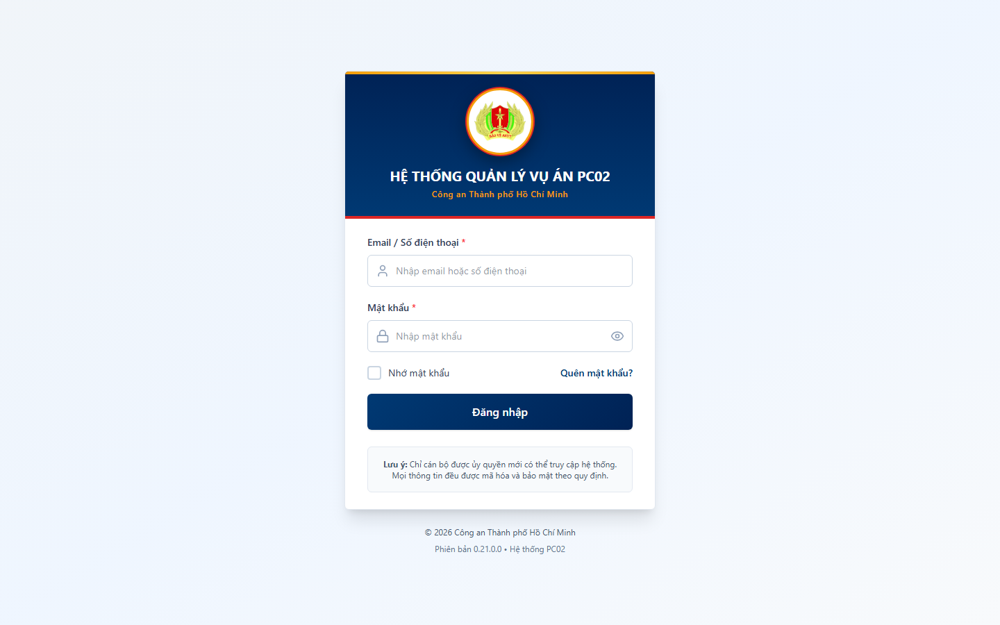
- Nhập email công vụ (ví dụ
officer1@pc02.local) - Nhập mật khẩu, nhấn Đăng nhập
- Đổi mật khẩu lần đầu nếu được yêu cầu
- Nếu quên mật khẩu — liên hệ quản trị viên để reset
Hướng dẫn cán bộ điều tra
Các chức năng dành cho điều tra viên trực tiếp xử lý hồ sơ vụ án, vụ việc, đơn thư.
1.1 Tổng quan, KPI & Lịch công tác
Nhóm chức năng "định hướng" — giúp cán bộ nắm bắt nhanh tình hình hồ sơ, chỉ tiêu công tác và lịch làm việc.
Tổng quan (Dashboard) /dashboard
Trang chủ sau khi đăng nhập. Hiển thị 6 thẻ thống kê tổng hợp (Tổng hồ sơ, Hồ sơ mới, Quá hạn, Đã xử lý, Tổng vụ việc, Tổng đơn thư), biểu đồ xu hướng 12 tháng và cơ cấu trạng thái vụ án.
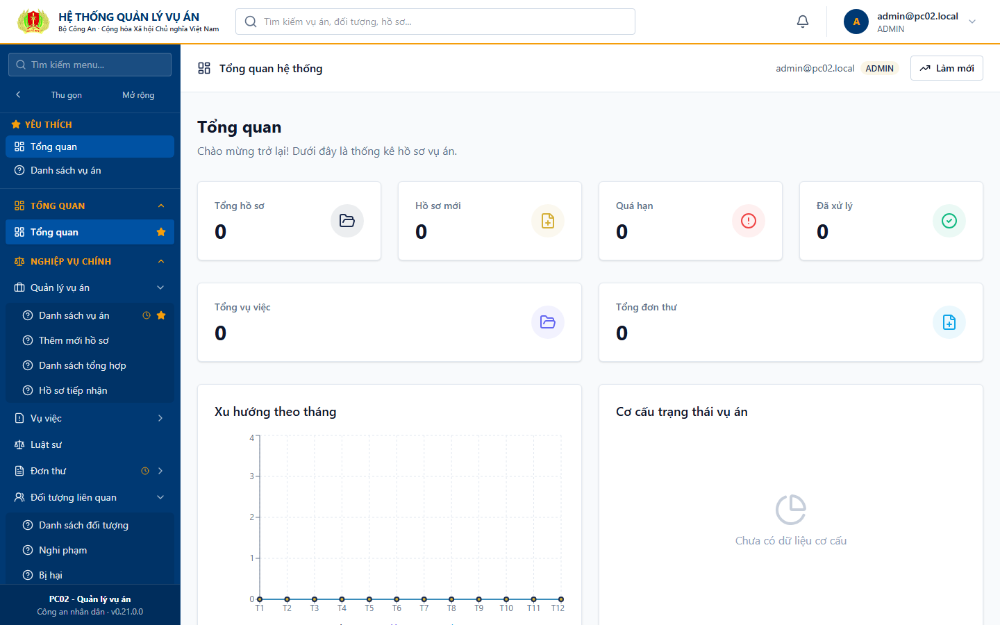
- Theo dõi số hồ sơ quá hạn để ưu tiên xử lý
- Nhấn Làm mới ở góc trên phải để cập nhật số liệu mới nhất
- Nhấn vào thẻ thống kê để chuyển sang trang danh sách tương ứng
Chỉ tiêu KPI /kpi
Dashboard 4 chỉ tiêu cứng theo Thông tư 28/2020/TT-BCA: tỷ lệ thụ lý 100%, giải quyết > 90%, khám phá > 80%, án nghiêm trọng/đặc biệt nghiêm trọng > 95%. Hỗ trợ drill-down theo Tổ và biểu đồ 12 tháng.
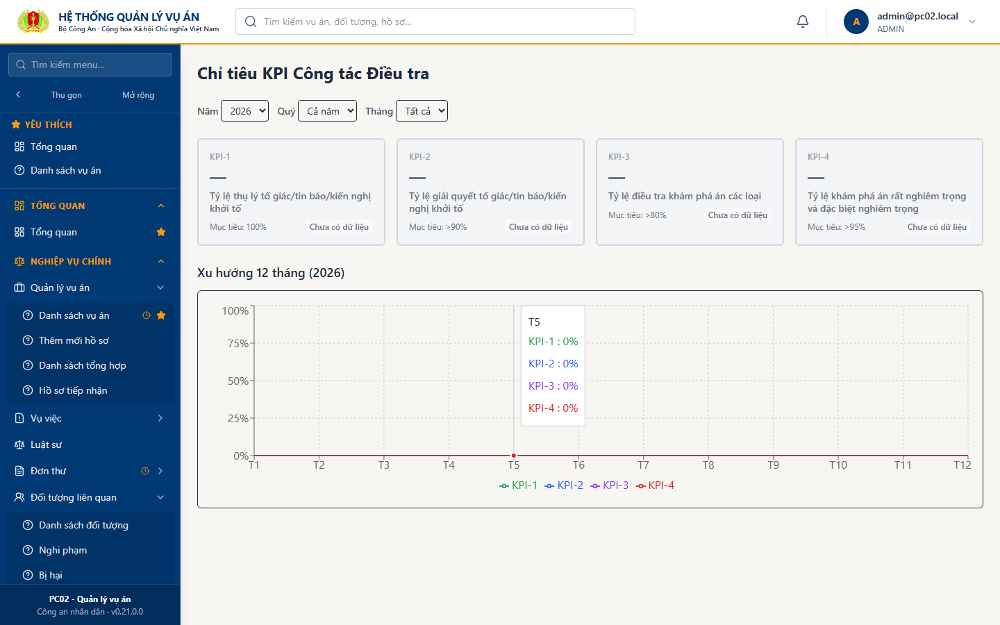
- Xem nhanh % đạt/chưa đạt từng chỉ tiêu
- Drill-down: nhấn vào tổ/đội để xem chi tiết
- Xuất báo cáo KPI (nếu cần) qua mục Báo cáo & Thống kê
Lịch công tác /calendar
Lịch chung của đơn vị + lịch cá nhân — sự kiện họp, gia hạn, hết hạn xử lý, nhắc nhở. Hỗ trợ chu kỳ lặp (RRULE) và đồng bộ holiday quốc gia.
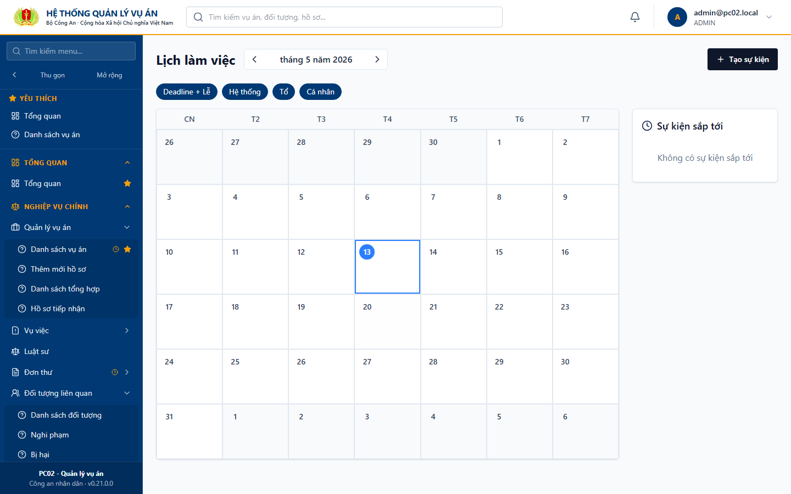
- Chuyển view: Tháng / Tuần / Ngày
- Nhấn vào ô trống để tạo sự kiện mới
- Click vào sự kiện để chỉnh sửa hoặc xoá
- Sự kiện có RRULE sẽ hiển thị biểu tượng lặp
1.2 Quản lý vụ án
Quản lý toàn bộ hồ sơ vụ án hình sự — từ giai đoạn tiếp nhận đến kết thúc điều tra. Bao gồm 4 màn hình: danh sách thường, thêm mới, danh sách tổng hợp (gồm vụ việc + đơn thư đã chuyển thành án), và hồ sơ tiếp nhận.
Danh sách vụ án /cases
Liệt kê toàn bộ vụ án trong phạm vi quyền hạn. Hỗ trợ lọc theo trạng thái, điều tra viên, tổ, thời gian. Mỗi dòng hiển thị mã hồ sơ, tội danh, người phụ trách, trạng thái, deadline.
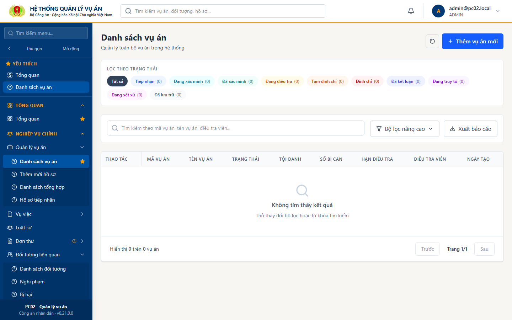
- Tìm kiếm theo mã hồ sơ hoặc tội danh
- Lọc theo trạng thái, tổ phụ trách, khoảng ngày
- Nhấn dòng để mở chi tiết vụ án
- Xuất danh sách ra Excel/PDF (nút Xuất file)
Thêm mới hồ sơ /add-new-record
Form khai báo vụ án mới — gồm thông tin chung (mã, tội danh, điều luật), đối tượng (nghi phạm, bị hại), điều tra viên phụ trách, deadline. Nếu khai báo trường petitionType sẽ tự động tạo đơn thư liên kết.
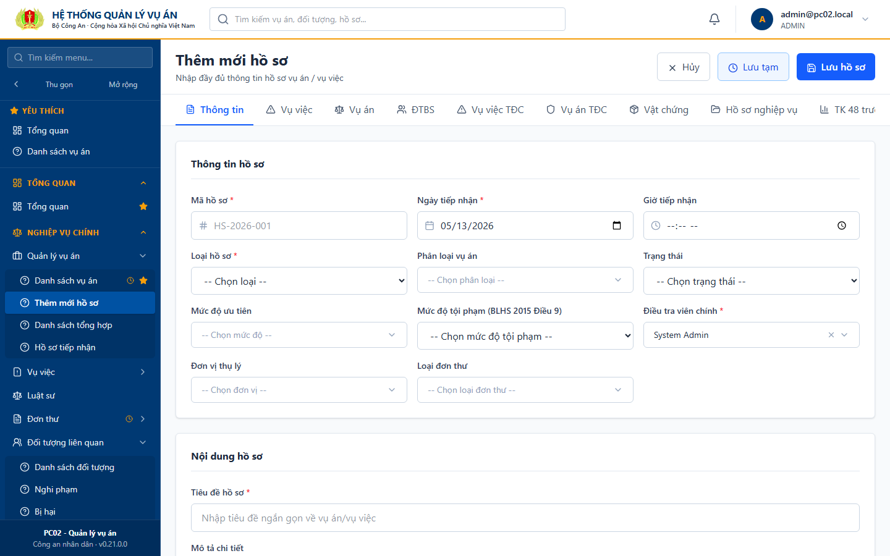
- Nhập mã hồ sơ (hoặc để hệ thống tự sinh)
- Chọn tội danh từ danh mục Điều luật
- Khai báo nghi phạm, bị hại (có thể chọn từ danh sách đối tượng có sẵn)
- Chọn điều tra viên phụ trách + tổ
- Nhấn Lưu — hệ thống tự tính deadline theo BLTTHS
Danh sách tổng hợp /comprehensive-list
View tổng hợp: vụ án + vụ việc + đơn thư trong cùng một bảng. Dùng để lãnh đạo nắm tình hình toàn bộ hồ sơ đơn vị mà không phải chuyển qua lại 3 màn hình.
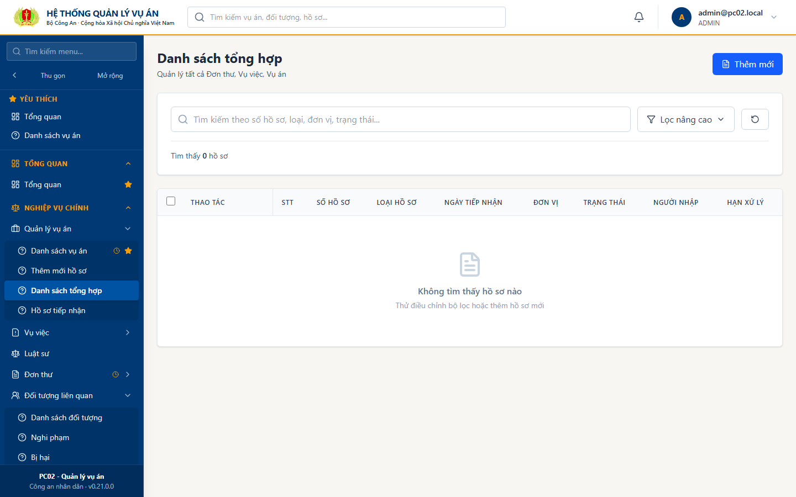
Hồ sơ tiếp nhận /initial-cases
Hồ sơ ở giai đoạn đầu (chưa khởi tố) — đang trong quá trình xác minh/thẩm tra trước khi quyết định có nâng cấp thành vụ án hay không. Đây là "vùng chờ" để cán bộ phân loại.
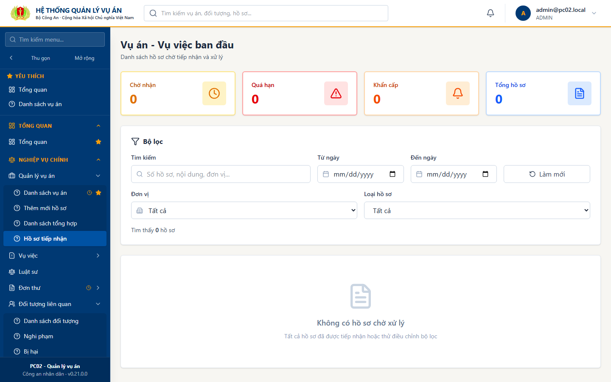
1.3 Quản lý vụ việc
Quản lý vụ việc theo 4 giai đoạn BCA (Thông tư 28/2020/TT-BCA): Tiếp nhận → Xác minh → Kết quả → Tạm đình chỉ. Hệ thống có 15 trạng thái vụ việc với transition map kiểm tra hợp lệ theo BLTTHS 2015.
Danh sách vụ việc /vu-viec
Liệt kê vụ việc theo giai đoạn. Mỗi dòng hiển thị mã, loại tin báo, người tiếp nhận, trạng thái, deadline xử lý (tự tính theo Điều 147/148/149 BLTTHS).
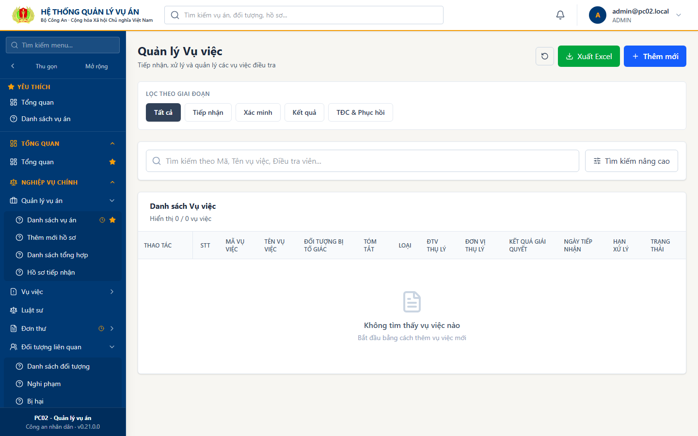
- Lọc theo giai đoạn: Tiếp nhận, Xác minh, Kết quả, Tạm đình chỉ
- Xem hồ sơ sắp quá hạn (highlight đỏ) để ưu tiên xử lý
- Chuyển trạng thái qua menu hành động — hệ thống tự kiểm tra hợp lệ
Thêm vụ việc mới /vu-viec/new
Form tiếp nhận tin báo, kiến nghị khởi tố, tố giác tội phạm. Sau khi lưu, hệ thống tự tính deadline 20 ngày (Điều 147) hoặc 2 tháng (Điều 148) tuỳ loại.
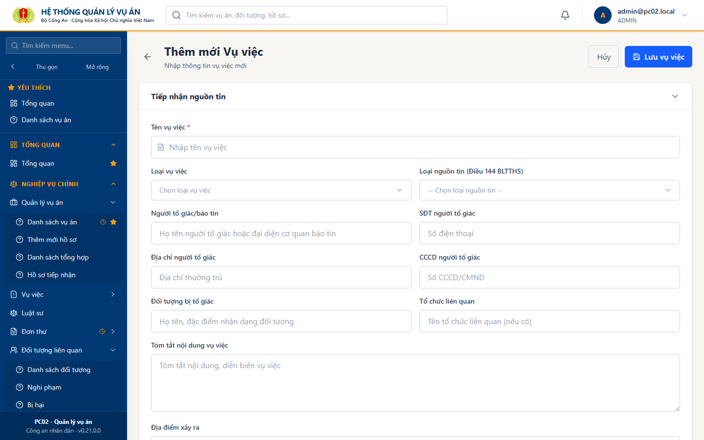
- Chọn loại tin báo (tố giác / kiến nghị khởi tố / tin báo tội phạm)
- Nhập nội dung tin báo, người tố giác, ngày tiếp nhận
- Phân công điều tra viên xác minh
- Lưu — hệ thống chuyển vụ việc vào giai đoạn Tiếp nhận
1.4 Quản lý đơn thư
Tiếp nhận, phân loại và xử lý đơn khiếu nại, tố giác. STT đơn được tự sinh theo định dạng
DT-YYYY-NNNNN. Đơn thư có thể chuyển thành vụ án qua thao tác atomic transaction.
Danh sách đơn thư /petitions
Liệt kê đơn thư theo trạng thái xử lý. Hỗ trợ lọc theo loại đơn, người gửi, ngày tiếp nhận, cán bộ phụ trách.
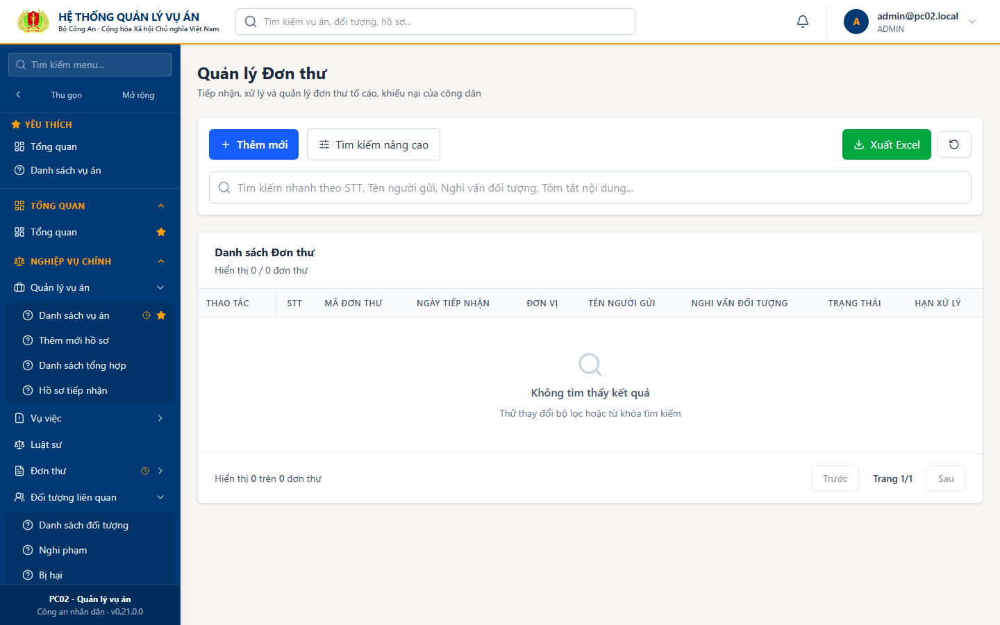
- Tìm theo STT đơn (
DT-2026-00001) hoặc tên người gửi - Chuyển đơn sang trạng thái Đang xử lý, Đã trả lời, Khép lại
- Nhấn Chuyển thành vụ án để nâng cấp đơn thành hồ sơ vụ án
Tiếp nhận đơn mới /petitions/new
Form tiếp nhận đơn — nhập thông tin người gửi, nội dung khiếu nại/tố giác, loại đơn, cán bộ thụ lý ban đầu.
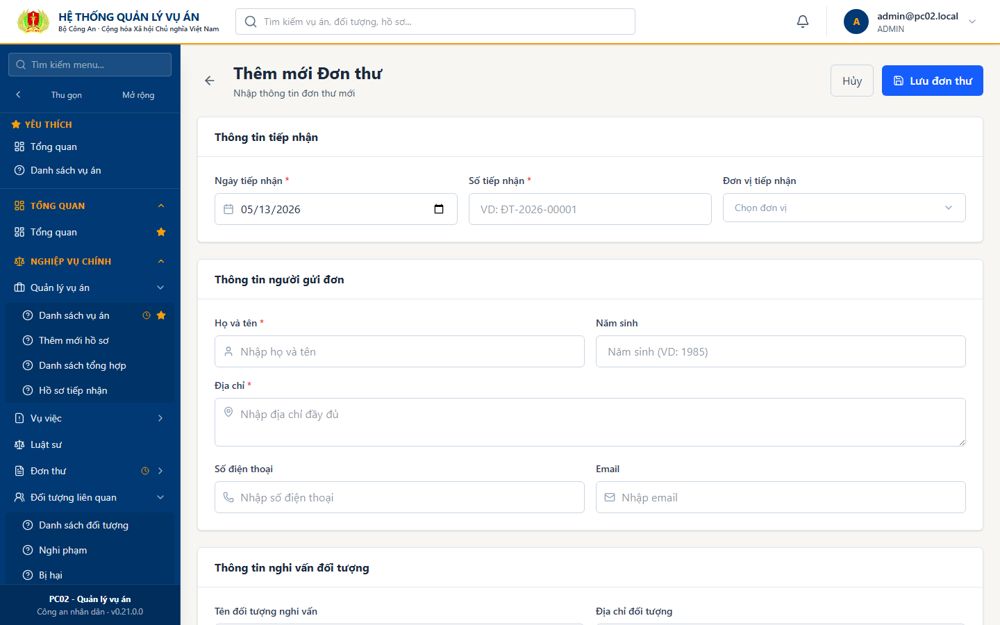
1.5 Đối tượng liên quan
Quản lý danh mục cá nhân/tổ chức liên quan đến hồ sơ — nghi phạm, bị hại, nhân chứng. Một đối tượng có thể xuất hiện trong nhiều vụ án/vụ việc khác nhau với vai trò khác nhau.
Danh sách đối tượng /objects
Danh sách tổng hợp tất cả đối tượng đã được khai báo trong hệ thống — bất kể vai trò. Dùng để tra cứu hồ sơ liên quan trước khi khởi tạo vụ án mới.
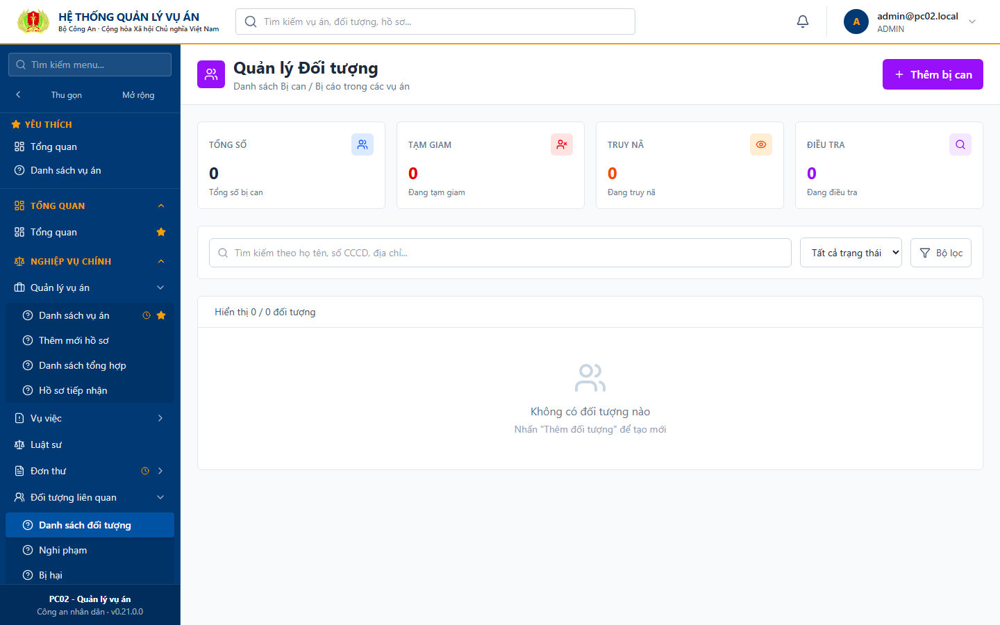
Nghi phạm /people/suspects
Danh sách đối tượng có vai trò nghi phạm trong ít nhất một hồ sơ. Hỗ trợ tra cứu tiền án tiền sự, các vụ liên quan trước đây.
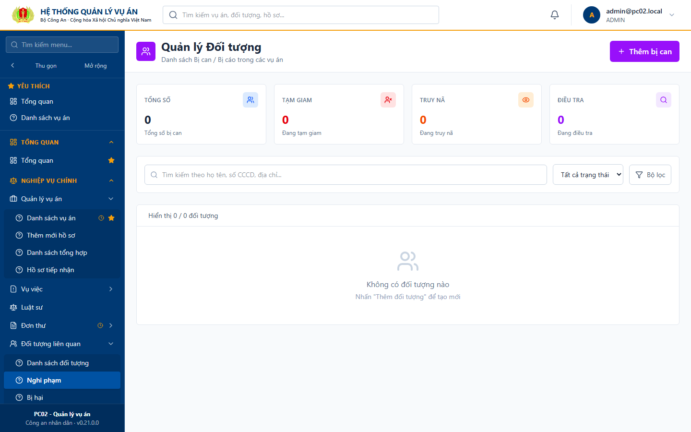
Bị hại /people/victims
Danh sách đối tượng có vai trò bị hại. Dùng để liên hệ, gửi giấy mời, theo dõi tình trạng giải quyết hồ sơ liên quan.
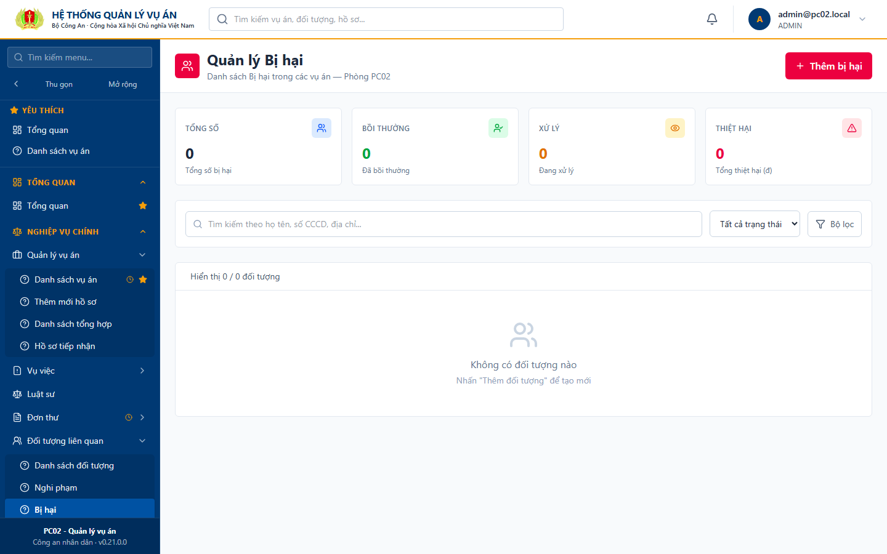
Nhân chứng /people/witnesses
Danh sách đối tượng có vai trò nhân chứng. Hỗ trợ tra cứu khi cần triệu tập lại hoặc đối chứng giữa nhiều hồ sơ.
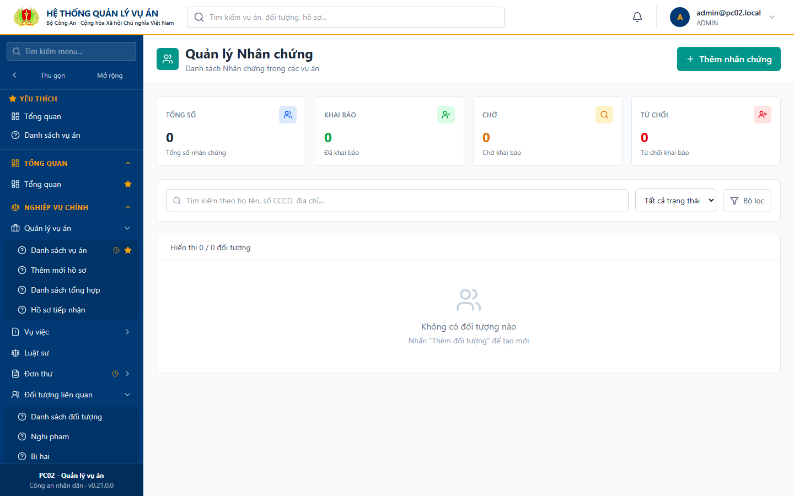
1.6 Luật sư
Quản lý danh sách luật sư bào chữa được đăng ký tham gia bào chữa trong các vụ án. Lưu thông tin liên hệ, văn phòng, mã thẻ luật sư.
Danh sách luật sư /lawyers
Liệt kê luật sư đang tham gia bào chữa. Mỗi luật sư có thể đứng tên bào chữa trong nhiều vụ.
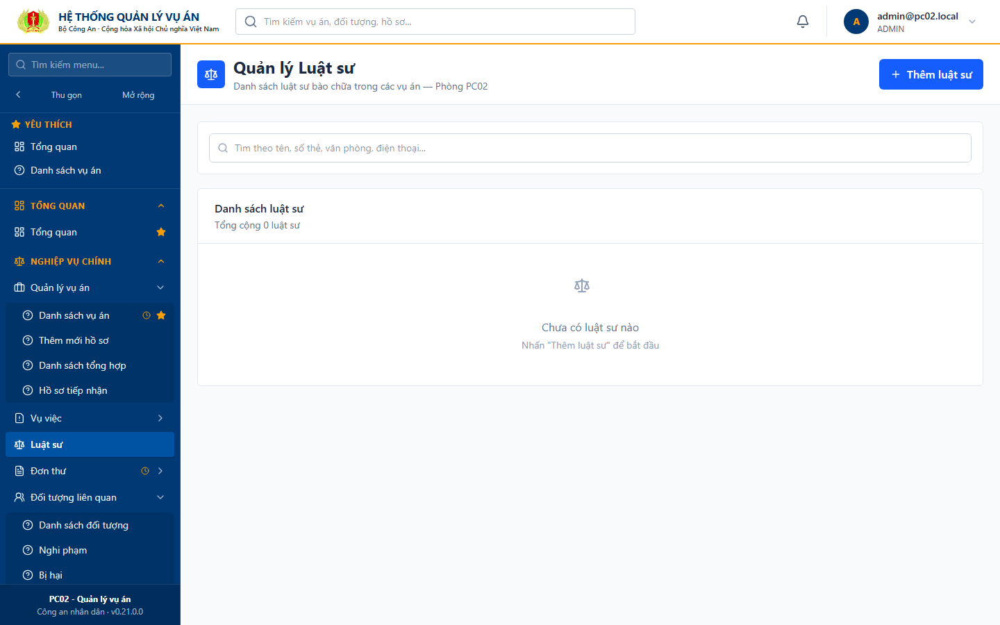
1.7 Quy trình xử lý
Các thao tác phối hợp công tác — luân chuyển hồ sơ, hướng dẫn nghiệp vụ, trao đổi vụ án giữa các đơn vị, uỷ quyền điều tra.
Luân chuyển / Trả lại /transfer-return
Theo dõi việc luân chuyển hồ sơ giữa các tổ/đơn vị hoặc trả lại VKS/CQĐT cấp trên. Mỗi lần chuyển đều có biên bản và lý do.
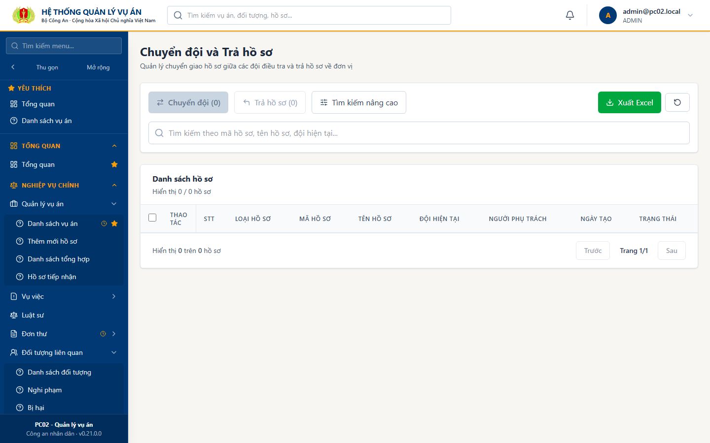
Hướng dẫn nghiệp vụ /guidance
Văn bản hướng dẫn nghiệp vụ do lãnh đạo ban hành xuống cấp dưới — gắn với từng hồ sơ cụ thể hoặc loại tội danh.
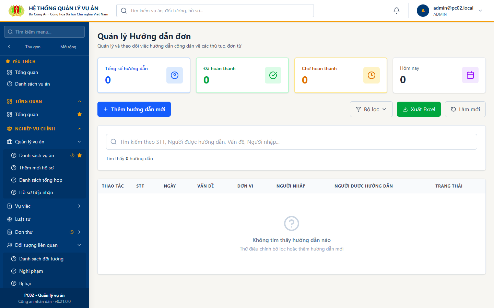
Trao đổi vụ án /case-exchange
Theo dõi việc phối hợp/trao đổi vụ án giữa các đơn vị (PC02 ↔ công an cấp huyện, VKS, các phòng nghiệp vụ khác).
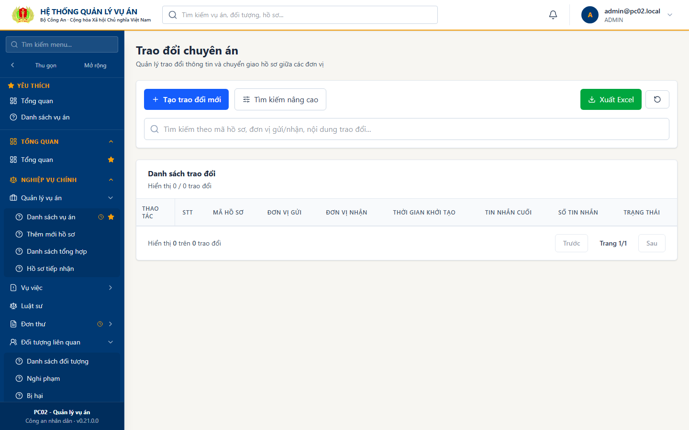
Uỷ quyền điều tra /investigation-delegation
Quản lý văn bản uỷ quyền điều tra — khi vụ án/vụ việc được CQĐT cấp trên uỷ quyền xuống PC02 thụ lý hoặc PC02 uỷ quyền cho cấp huyện.
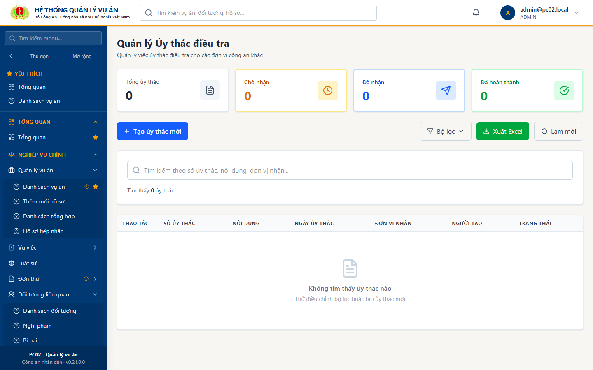
1.8 Phân loại & Quản lý
Các view phân loại hồ sơ theo nhiều tiêu chí khác nhau — theo phường/xã, theo đề xuất VKS, theo đơn trùng lặp, hoặc theo phân loại tuỳ chỉnh.
Vụ án theo phường/xã /ward/cases
Hồ sơ vụ án được phân nhóm theo phường/xã nơi xảy ra — phục vụ thống kê địa bàn, báo cáo Quận uỷ/UBND.
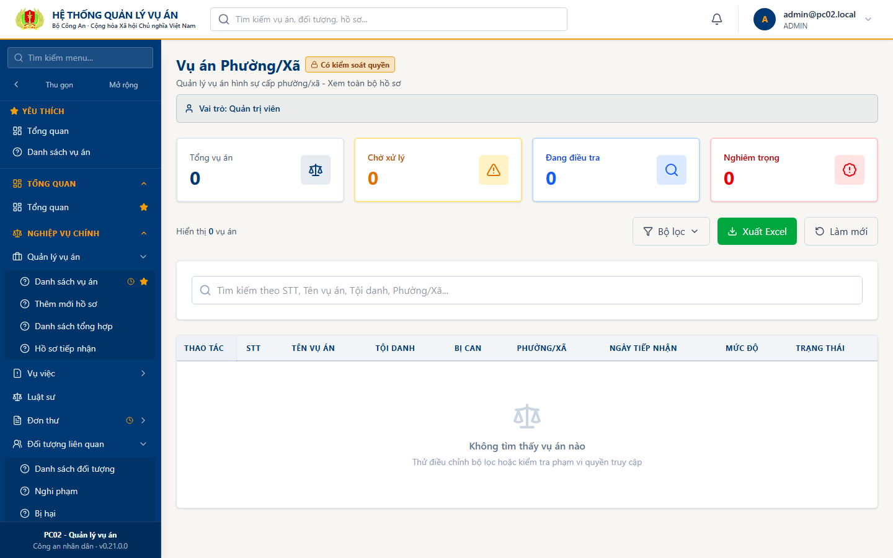
Vụ việc theo phường/xã /ward/incidents
Tương tự, nhưng phân nhóm vụ việc thay vì vụ án.
Đề xuất VKS /prosecutor-proposal
Hồ sơ có đề xuất gửi Viện Kiểm sát — truy tố, đình chỉ điều tra, gia hạn, v.v. Theo dõi trạng thái phê duyệt từ VKS.
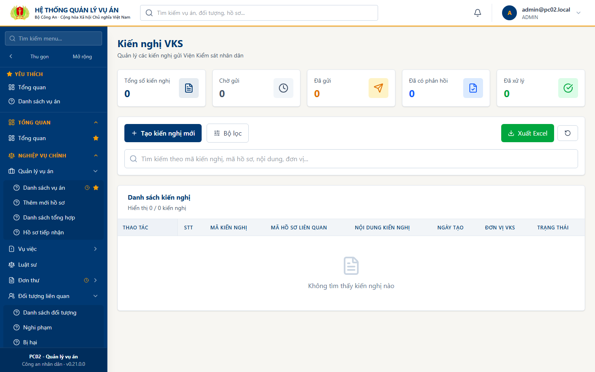
Đơn trùng lặp /classification/duplicates
Hệ thống phát hiện đơn thư có nội dung/người gửi trùng lặp với đơn đã tiếp nhận trước đó — giúp cán bộ tránh xử lý lặp.
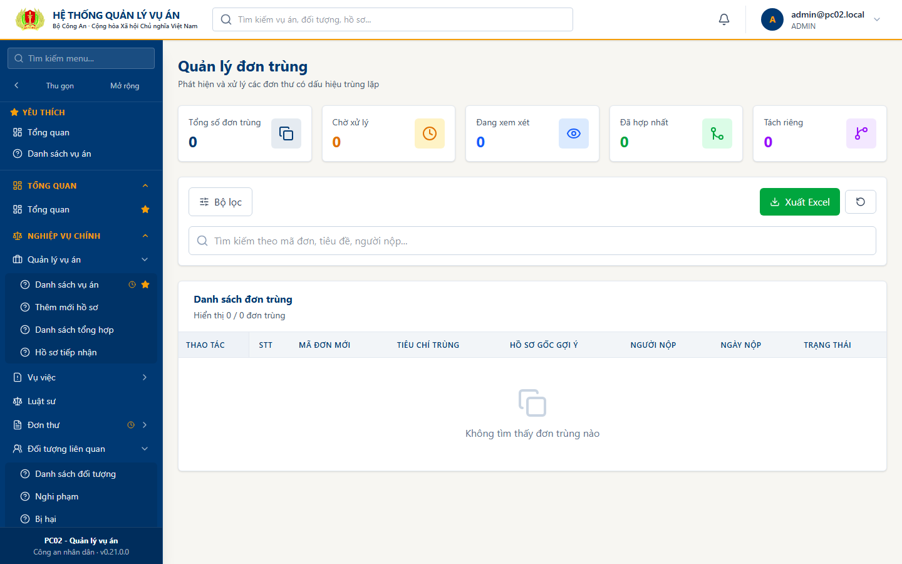
Phân loại khác /classification/others
Các phân loại tuỳ chỉnh khác do quản trị viên cấu hình — ví dụ phân loại theo tội danh đặc thù, theo dạng vụ án đặc biệt.
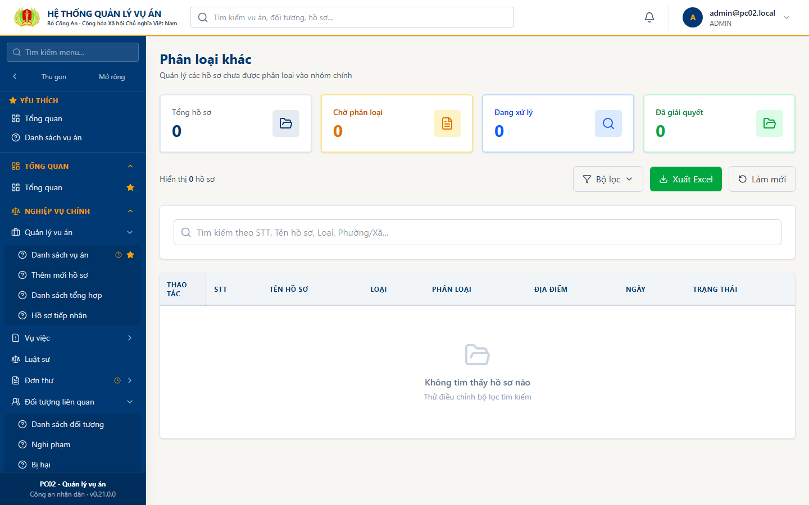
1.9 Báo cáo & Thống kê
Hệ thống cung cấp 9 loại báo cáo/thống kê khác nhau — từ xuất hồ sơ Excel cho đến phụ lục 1-6 BCA định kỳ. Tất cả đều có thể xuất file (Excel/PDF) và in.
Xuất hồ sơ đơn thư /export-reports
Xuất danh sách đơn thư theo khoảng thời gian, loại đơn, trạng thái — kết quả là file Excel để cán bộ làm báo cáo lên lãnh đạo.
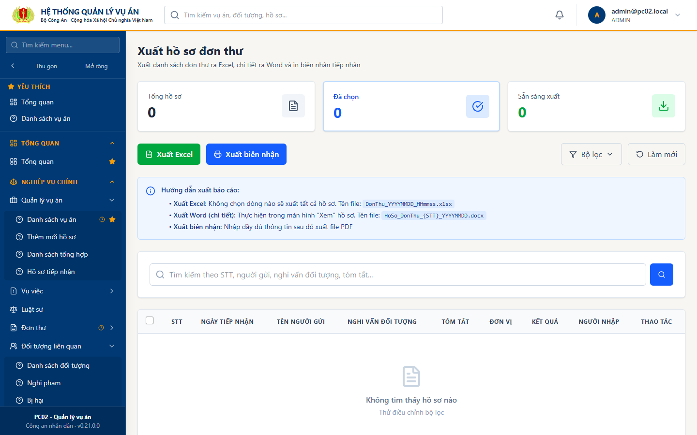
Báo cáo tháng /reports/monthly
Báo cáo tổng hợp công tác tháng — số vụ án mới, số vụ giải quyết, tỷ lệ khám phá, danh sách hồ sơ quá hạn.
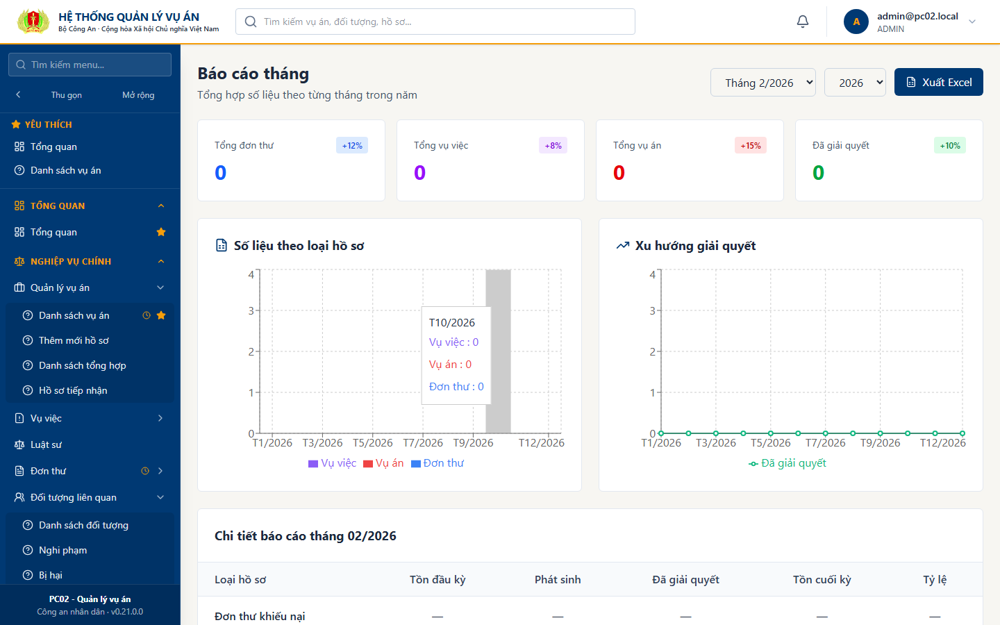
Báo cáo quý /reports/quarterly
Báo cáo công tác quý — tương tự báo cáo tháng nhưng phạm vi 3 tháng, có thêm so sánh quý trước.
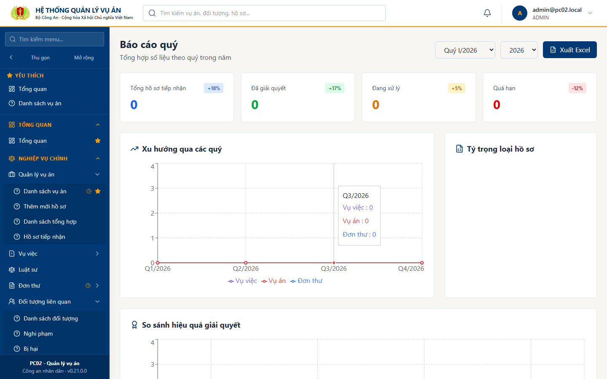
Thống kê phường/xã /statistics/district
Thống kê số liệu hồ sơ theo địa bàn phường/xã — bao gồm cả vụ án và vụ việc, có biểu đồ heatmap.
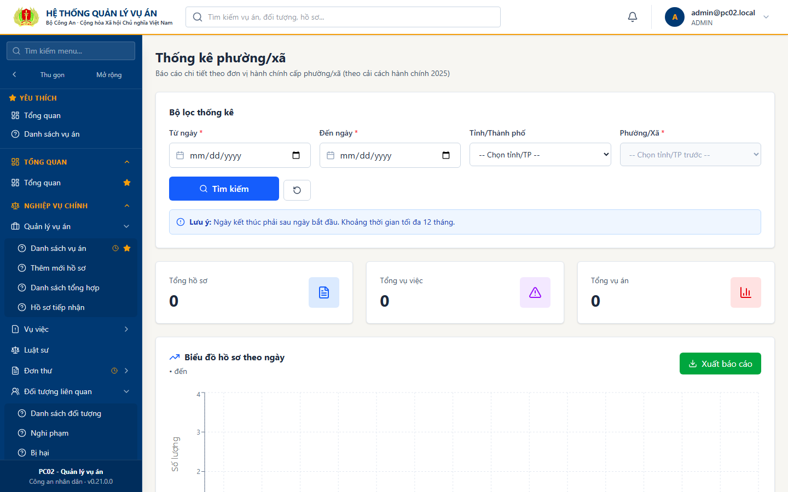
Hồ sơ quá hạn /settings/overdue-records
Danh sách tất cả hồ sơ đã quá hạn xử lý hoặc sắp quá hạn (cảnh báo đỏ). Cán bộ phải ưu tiên giải quyết — nếu cần gia hạn, đề xuất qua mục Quy tắc thời hạn.
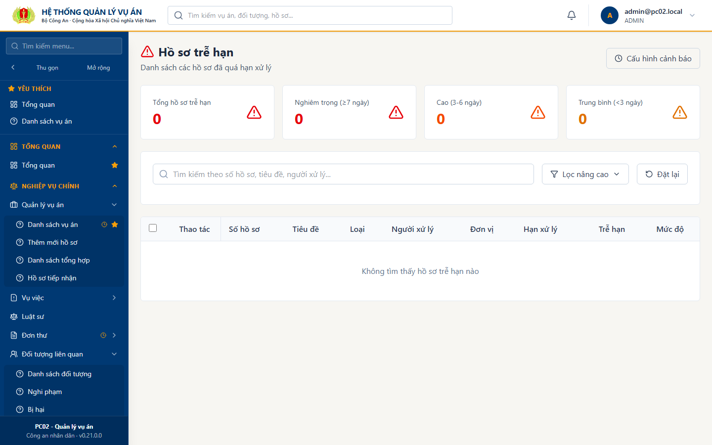
Nhật ký hoạt động /activity-log
Lịch sử tất cả thao tác trên hệ thống — ai làm gì, lúc nào, thay đổi gì. Dùng để truy vết khi có sự cố, hoặc kiểm tra tuân thủ.
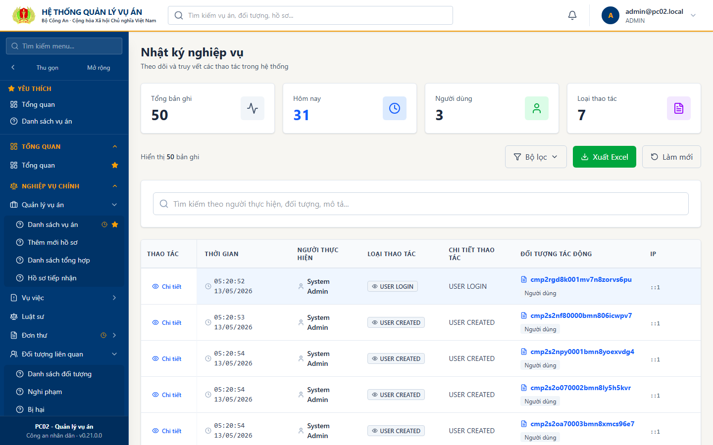
Báo cáo TĐC /reports/tdac
Báo cáo Tổng đội Cảnh sát — báo cáo chuyên đề định kỳ gửi lãnh đạo Tổng đội.
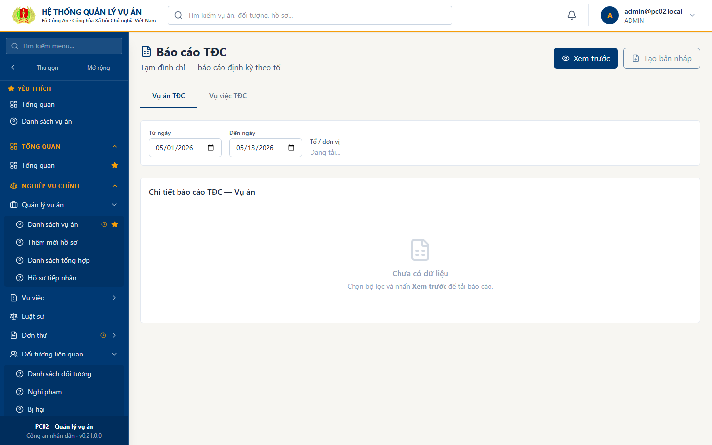
Thống kê 48 trường /reports/stat48
Báo cáo thống kê 48 trường dữ liệu chi tiết theo mẫu BCA — phục vụ tổng hợp số liệu nghiệp vụ gửi lên cấp trên.
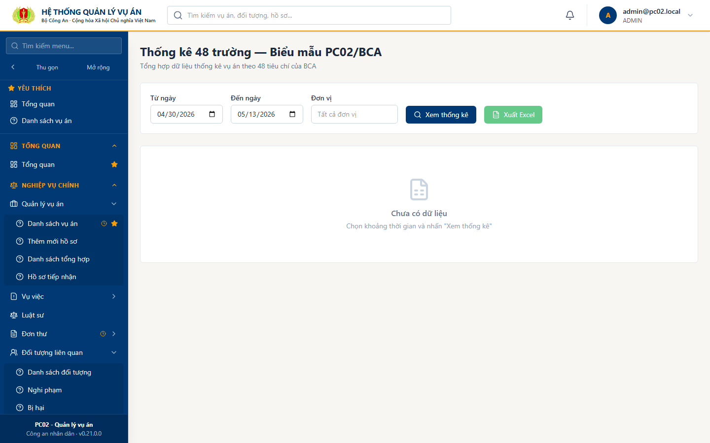
Phụ lục 1-6 BCA /reports/phu-luc-1-6
Bộ 6 phụ lục báo cáo theo quy định BCA — thường xuất định kỳ hàng quý/năm gửi cấp Bộ.
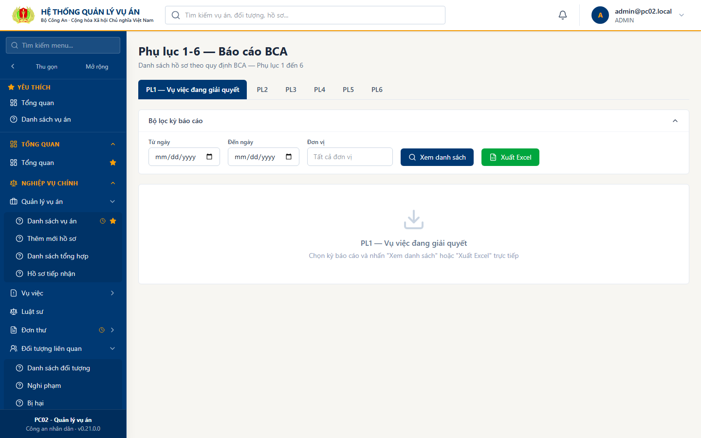
1.10 Tài liệu, Danh mục & Cấu hình
Các tiện ích hỗ trợ — kho tài liệu hồ sơ scan, danh mục tra cứu chuẩn (điều luật, đơn vị, phường xã), lớp phân loại tuỳ chỉnh, và cấu hình hệ thống cấp người dùng.
Tài liệu hồ sơ /documents
Kho lưu trữ file scan, ảnh hiện trường, video, PDF biên bản — gắn với từng hồ sơ vụ án/vụ việc/đơn thư. Hỗ trợ tải lên, xem trực tuyến, tải về.
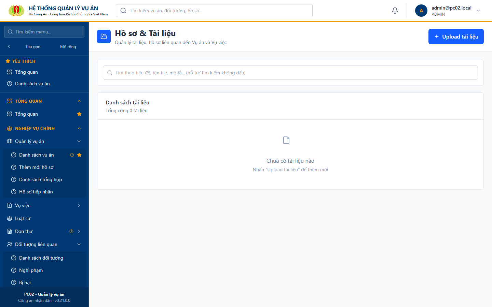
Danh mục tra cứu /danh-muc
Tra cứu nhanh các danh mục chuẩn của hệ thống — Điều luật BLHS, danh sách phường/xã, đơn vị công an, loại tội danh, loại đối tượng.
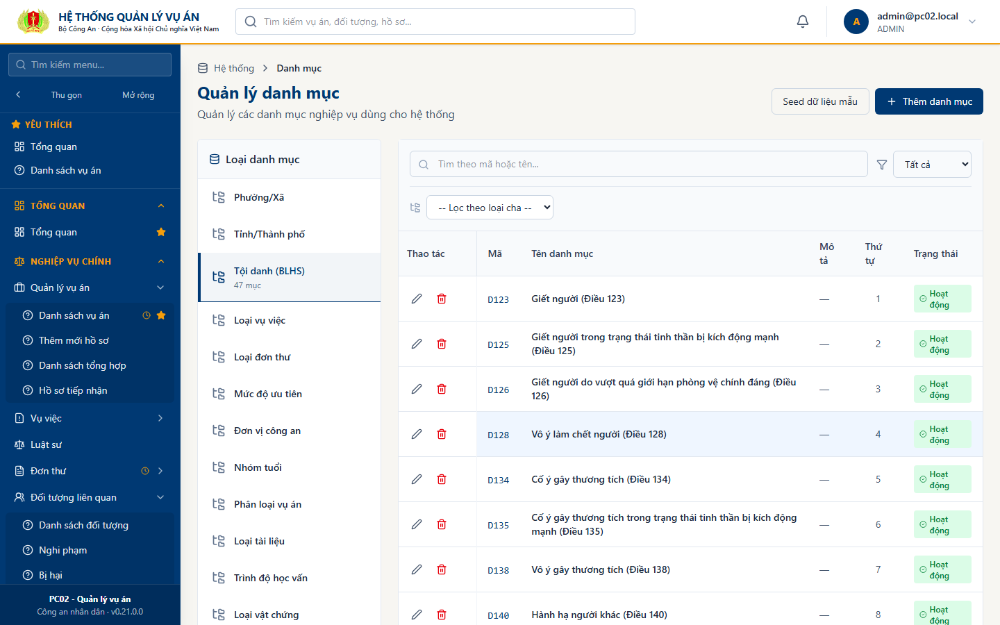
Lớp phân loại /phan-loai
Quản lý các lớp phân loại tuỳ chỉnh (master class) — dùng cho phân loại đặc thù theo từng đơn vị.
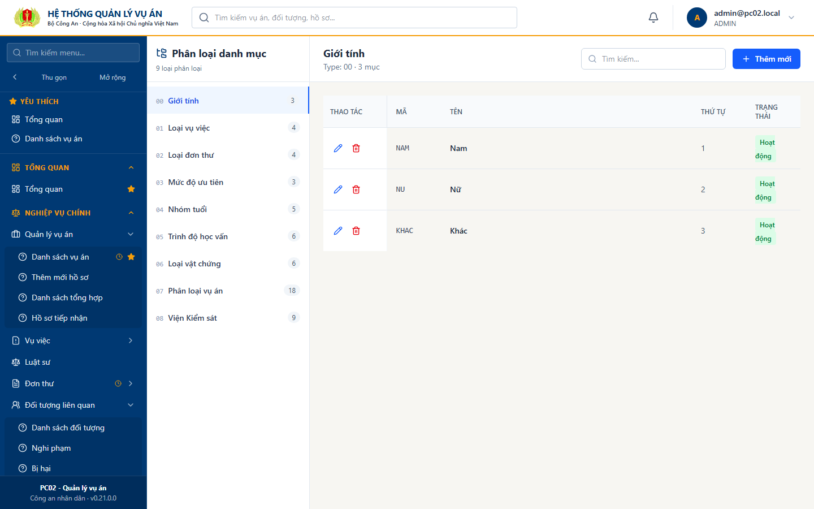
Cấu hình hệ thống /settings
Cấu hình cá nhân — đổi mật khẩu, cài đặt 2FA, thiết lập thông báo, ngôn ngữ giao diện.
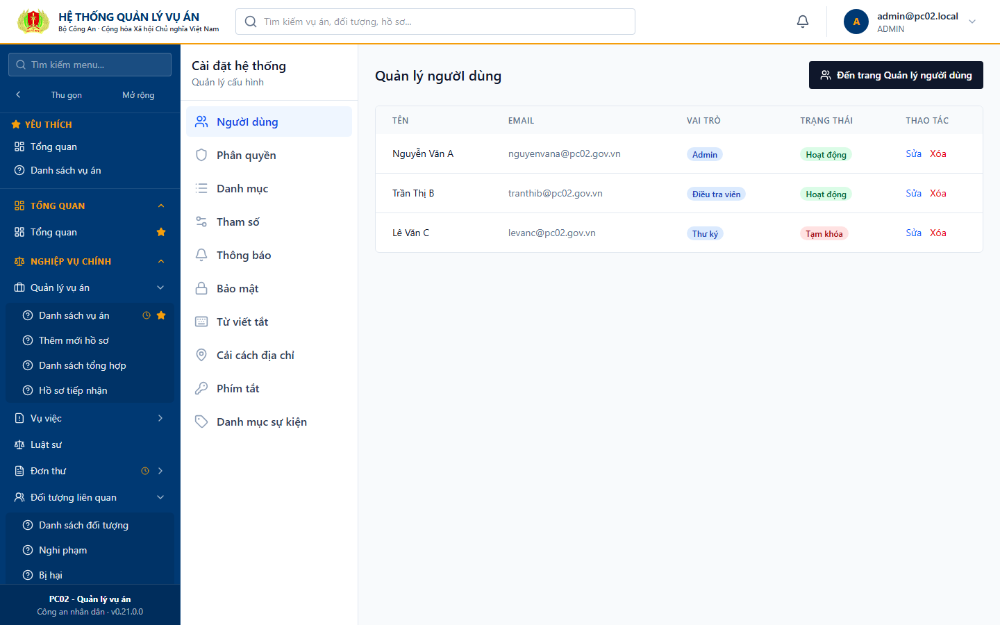
Hướng dẫn quản trị viên
Các chức năng dành riêng cho quản trị viên hệ thống (vai trò ADMIN) — quản lý người dùng, phân quyền tổ/đội, cấu hình quy tắc thời hạn và thiết lập cấp hệ thống.
2.1 Quản lý người dùng
Tạo, sửa, khoá/mở tài khoản cán bộ. Cấp mật khẩu tạm thời lần đầu, gán vai trò (ADMIN/OFFICER/DEADLINE_APPROVER), phân vào tổ/đội.
Danh sách người dùng /nguoi-dung
Quản lý toàn bộ tài khoản trong hệ thống.
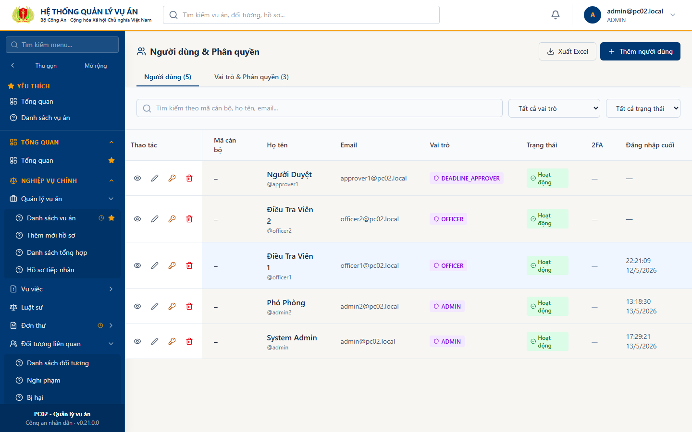
- Tạo tài khoản: Nhập email, họ tên, chọn vai trò + tổ. Hệ thống sinh mật khẩu tạm thời — copy giao cho cán bộ (chỉ hiển thị 1 lần)
- Reset mật khẩu: Tạo mật khẩu tạm thời mới khi cán bộ quên
- Khoá tài khoản: Khi cán bộ nghỉ việc/chuyển đơn vị
- Đổi vai trò/tổ: Khi cán bộ luân chuyển vị trí công tác
2.2 Tổ/Đội công tác
Quản lý cơ cấu tổ/đội trong đơn vị. Mỗi cán bộ thuộc đúng 1 tổ; phân quyền dữ liệu (Data Scope) dựa trên tổ này.
Danh sách tổ/đội /to-nhom
Tạo, sửa, xoá tổ/đội. Thiết lập tổ trưởng và phạm vi nghiệp vụ.
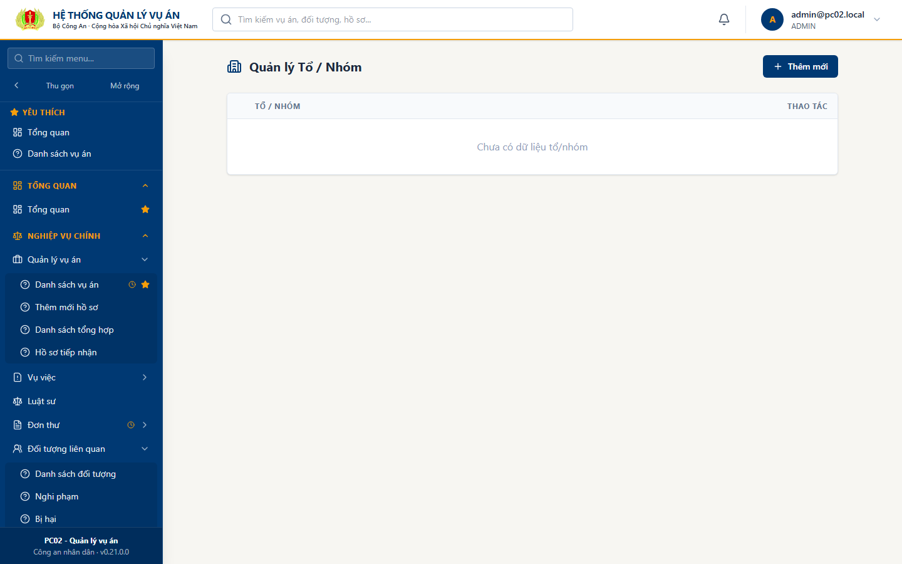
- Tạo tổ mới khi có cơ cấu tổ chức thay đổi
- Phân tổ trưởng — tổ trưởng có quyền xem toàn bộ hồ sơ của tổ
- Thay đổi tổ của cán bộ qua mục Quản lý người dùng
2.3 Quy tắc thời hạn
Cấu hình các quy tắc tính deadline tự động cho hồ sơ — theo loại vụ án, tội danh, giai đoạn xử lý. Mặc định theo BLTTHS Điều 147 (20 ngày), 148 (2 tháng), 149 (4 tháng).
Quy tắc thời hạn /admin/deadline-rules
Danh sách các quy tắc đang áp dụng. Có thể thêm quy tắc tuỳ chỉnh cho loại vụ án/tội danh đặc thù.
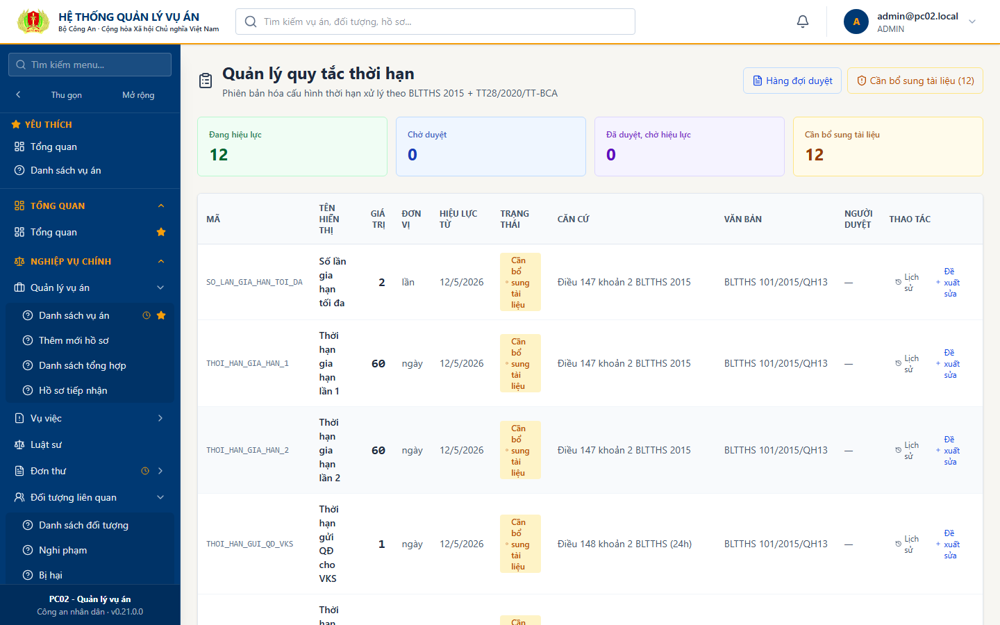
- Xem danh sách quy tắc hiện hành
- Tạo quy tắc mới (loại hồ sơ + số ngày + giai đoạn áp dụng)
- Phê duyệt/từ chối đề xuất gia hạn từ điều tra viên
- Kiểm tra log gia hạn trong Nhật ký hoạt động
2.4 Cấu hình admin
Cấu hình ở cấp hệ thống — SystemSetting (key-value), Feature Flags (bật/tắt module), thông số phòng chống dò mật khẩu, retention log.
Cấu hình admin /admin/settings
Quản lý các cấu hình toàn cục.
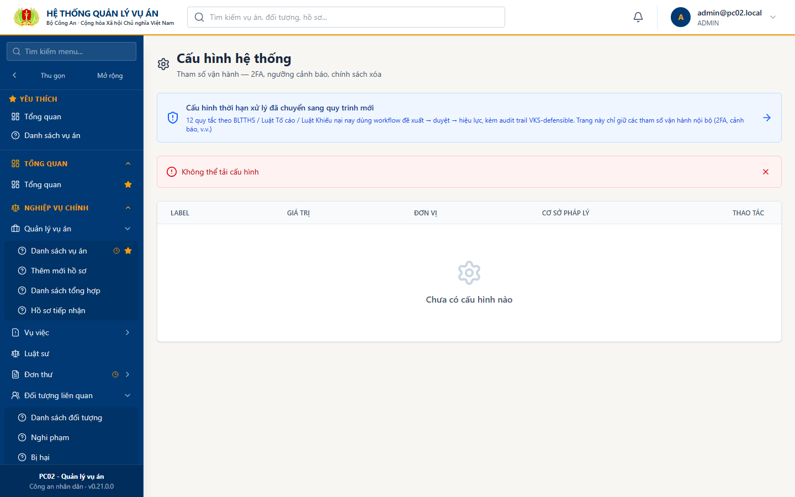
- SystemSetting: các tham số dạng key-value (thời hạn mặc định, ngưỡng cảnh báo, v.v.)
- Feature Flags: bật/tắt module (Calendar, KPI, Documents…) mà không cần redeploy
- 2FA bắt buộc: ép tất cả tài khoản phải bật 2FA
- Retention log: thời gian lưu trữ nhật ký hoạt động
Phụ lục
A. Bảng vai trò & quyền hạn
| Vai trò | Phạm vi dữ liệu | Quyền chính |
|---|---|---|
| OFFICER | Hồ sơ trong tổ | Tạo/sửa hồ sơ thuộc tổ; xem báo cáo tổ; không xem hồ sơ tổ khác |
| Tổ trưởng | Toàn bộ tổ | Như OFFICER + xem tất cả hồ sơ của tổ; phân công điều tra viên trong tổ |
| DEADLINE_APPROVER | Theo phân công | Phê duyệt/từ chối đề xuất gia hạn thời hạn |
| ADMIN | Toàn đơn vị | Quản lý người dùng/tổ/đội/quy tắc/cấu hình; xem toàn bộ hồ sơ; xem nhật ký hoạt động |
B. Tham chiếu pháp lý
| Văn bản | Áp dụng cho |
|---|---|
| BLTTHS 2015 — Điều 147 | Thời hạn xác minh tố giác: 20 ngày |
| BLTTHS 2015 — Điều 148 | Tạm đình chỉ giải quyết: 2 tháng |
| BLTTHS 2015 — Điều 149 | Gia hạn xác minh: tối đa 4 tháng |
| Thông tư 28/2020/TT-BCA | 4 giai đoạn xử lý vụ việc + 4 chỉ tiêu KPI cứng |
C. Liên hệ hỗ trợ
- Sự cố kỹ thuật: liên hệ quản trị viên hệ thống đơn vị
- Quên mật khẩu: đề nghị ADMIN reset qua mục Quản lý người dùng
- Đề xuất tính năng: gửi qua email tới đầu mối phụ trách hệ thống
D. Phiên bản hệ thống
Tài liệu này áp dụng cho phiên bản v0.21.0.0 (cập nhật 13/05/2026). Khi hệ thống nâng cấp, tài liệu sẽ được sửa đổi tương ứng — kiểm tra phiên bản hiện hành ở góc dưới trái của sidebar.